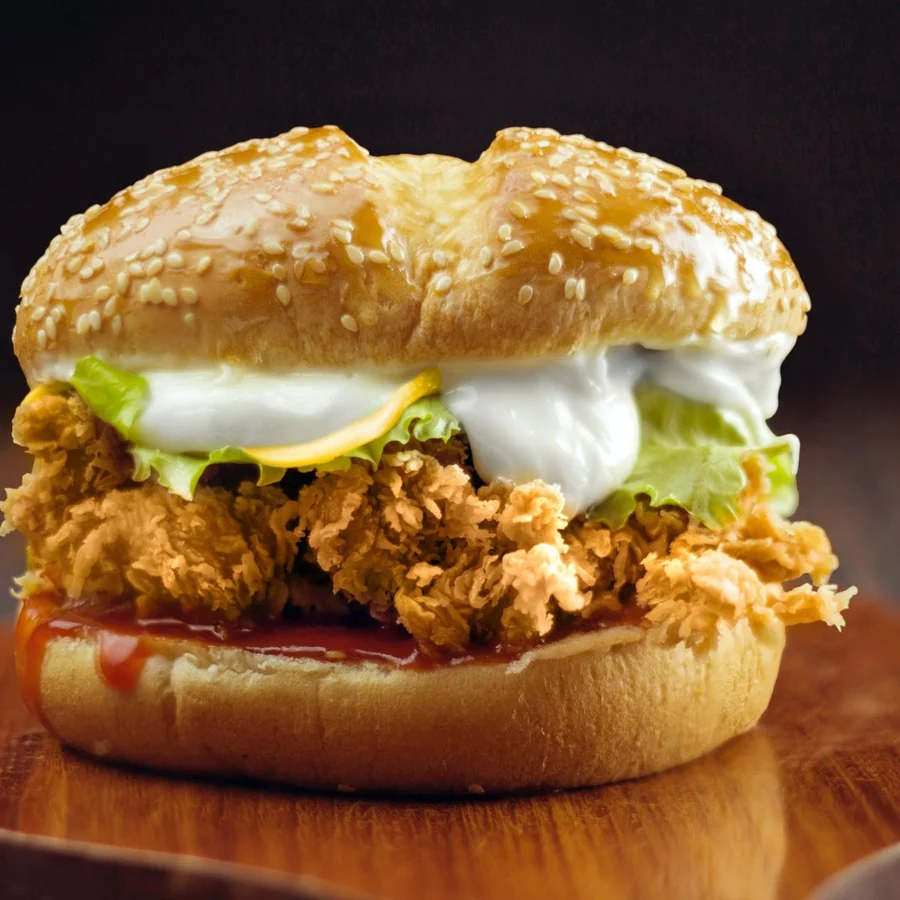
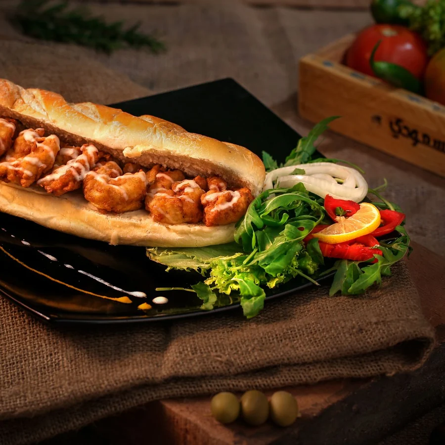
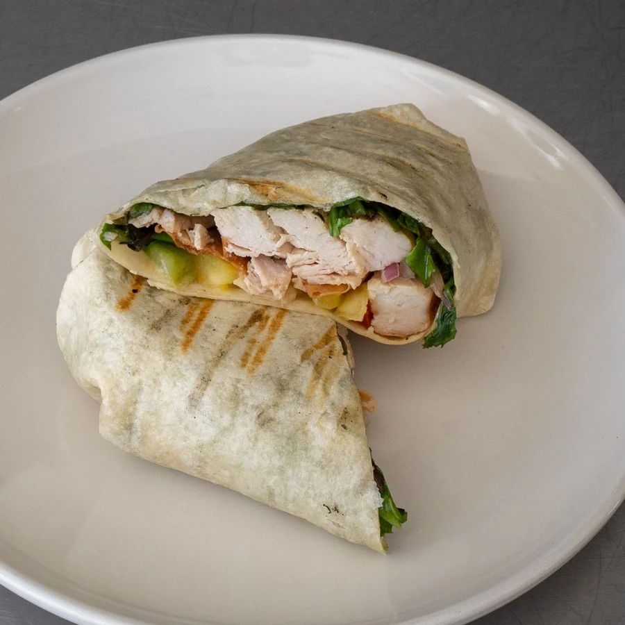

Dorohoi
- Adresă
- Strada Ștefan cel Mare 37, Dorohoi
- Program
- Program [DE COMPLETAT]
- Telefon
- +40 755 024 992

Câte unul din fiecare: crispy, grill și crispy sandwich.

Piept de pui, bechamel, pesmet, cartofi pai, sos de usturoi, chiflă.
15 lei
Piept de pui, cașcaval, roșii, castraveți, salată verde, chiflă.
15 lei
Tortilla, chicken crispy, cartofi pai, sos de usturoi, sos cheddar.
14 leiDe luni până vineri, între 08:00 și 15:00, livrăm la școli și licee fără taxă de transport sau ambalare. Pentru pauze cu bună dispoziție, o alternativă la pachețelul clasic de acasă. Pentru comenzi sună la 0755 024 992.